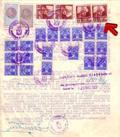
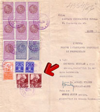

Francisc Ambruş, Bucureşti, România
On the documents presented was used and canceled a red postage stamp with the 3 lei value and brown postage stamp with the 6 lei value from the 1935 issue named "Carol II uzuale (with word Posta)". All the fiscal taxes paid on this documents appear to be correct.
 |
 |
The paid revenue stamp tax according to the Stamp and
Tax on Documents and Legal Acts Law from the 29th of April 1927, approved in
the Official Monitor from 1935 and the Aviation Stamp tax according to the
new Law of the National Aviation Fund from the 18th of May 1932 being paid,
also according to the habit of the day and at the value established by law.
 |
 |
 |